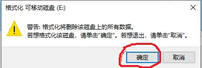
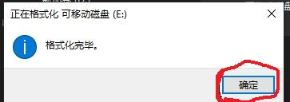
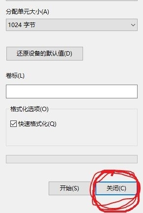
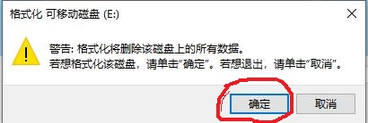
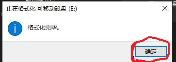
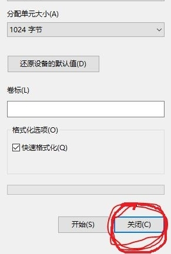

我们都是地球人,大家相亲相爱,互相尊重帮助;不要打架,不要打仗,不要伤害;世界永远和平美好.
联系我 Copyright © 2016.
www.kerne1.org All rights reserved.
注意:请提前备份数据,继续操作会导致数据丢失,否则请勿继续操作
此页面教你安装一个全新的，安全的，无病毒的win10系统。硬件要求是
硬盘大于20GB
读卡器和8G内存卡，或者你有8G的U盘也可以
下载iso光盘文件
- 打开微软官方地址下载10ISO点击红圈

- 点“选择版本”再点“确认”

- “选择一种语言”再“确认”
 将上面下载好的iso文件写入读卡器
将上面下载好的iso文件写入读卡器
- 打开https://cn.ultraiso.net/xiazai.html然后下载

- 安装


- 运行软件

- 打开下载好的win10iso光盘文件


- 点击 “启动”再点“写入硬盘映像”

- 选择“是”

- 选择8GB的u盘，再点“格式化”（请提前备份u盘的文件，以下操作会导致文件被删除）

- 开始格式化
 





- 最后“写入”

- 完成。点击“返回”，关闭程序

- 重启电脑，进入BOSS设置从u盘启动。关于这步操作请看这里这里
此步骤在手机上一边查看一边操作,难度较为复杂。
- 开始安装,看着鼠标点击就行.安装前要先拔掉网线.


- 勾选“我接受许可条款”


- 分区.输入50000，表示系统分区大小是50G。可以根据你的情况来调整


- 安装,复制文件.


- 复制完成,系统自动重启，拔出U盘

- 稍等一会,进入系统前进行一些设置


- 在方框中输入一个好记点的名称再点“下一步”

- 不用输入任何东西，以后就可以不用密码自动登录了。当然为了安全你也可以设置密码


- 点击白点。把“是”改为“否”，再点"接受“

- 稍等一会后终于进入了系统,来几张图片show


 记得插上网线,更新系统.插上网线,更新系统.插上网线,更新系统
安装完成，再见。
记得插上网线,更新系统.插上网线,更新系统.插上网线,更新系统
安装完成，再见。
参考网址：???
说明：上文中提到的相关软件与系统，仅仅是用来试用，已在24小时内将其删除。
创建时间：不详
修改时间: